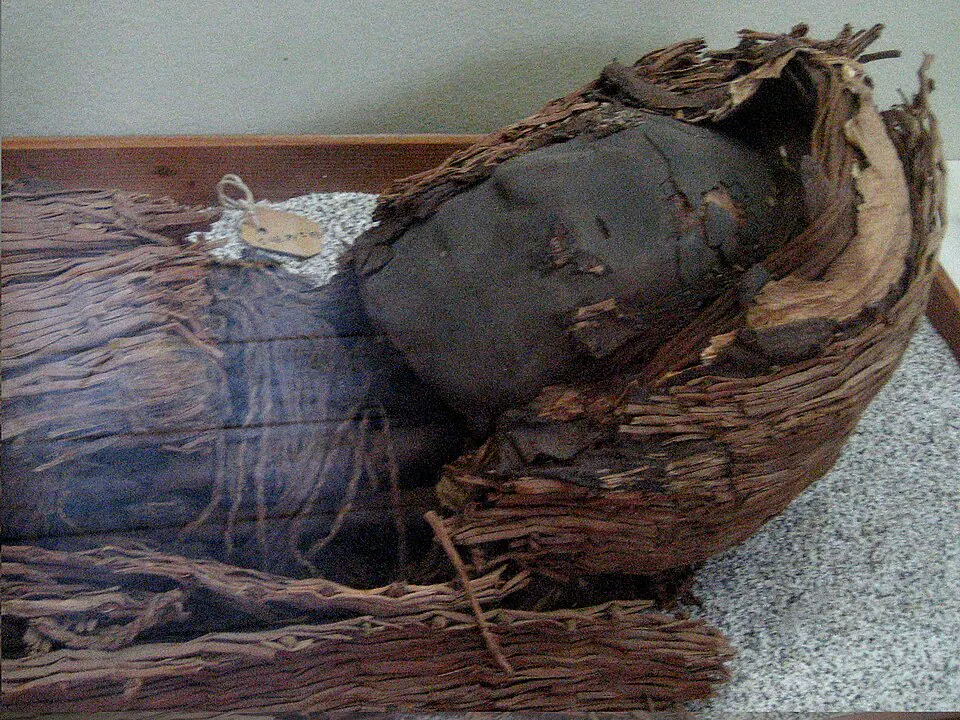

Las momias Chinchorro

La Cultura Chinchorro reunió a grupos de pescadores, cazadores y recolectores que habitaron durante milenios la costa del desierto, entre el sur del actual Perú y la zona de Antofagasta. Su nombre proviene de la playa Chinchorro, en Arica, donde el arqueólogo alemán Max Uhle describió sus entierros a comienzos del siglo XX.
Hacia el 5.000 a.C. comenzaron a practicar la momificación artificial, unos dos mil años antes que en Egipto. El proceso era complejo: desarmaban y reconstruían los cuerpos, los reforzaban con palos y fibras vegetales, los cubrían con arcilla y los pintaban con manganeso (momias negras) u ocre (momias rojas). Momificaban a personas de todas las edades, incluidos niños y recién nacidos, lo que sugiere un fuerte vínculo con los ancestros.
Su vida dependía del mar: usaban anzuelos de concha y arpones para pescar y cazar. Parte de las momias se conserva en el Museo Arqueológico San Miguel de Azapa, de la Universidad de Tarapacá. En 2021, la UNESCO inscribió los sitios de la cultura Chinchorro en la Lista del Patrimonio Mundial.
Versión para niños
Hace unos 7.000 años, en la costa de Arica, vivía la cultura Chinchorro. Eran pescadores y mariscadores que conocían muy bien el mar. Para honrar a sus muertos, preparaban sus cuerpos con mucho cuidado: los cubrían con barro, les ponían máscaras y pelucas, y los pintaban de negro o de rojo. Así nacieron las momias Chinchorro, que hoy se protegen en museos de Arica. Eran una forma de recordar y querer a su familia.
Para maestros
Nivel sugerido: 2° básico
Objetivo: Valorar a la cultura Chinchorro como una de las más antiguas del territorio y comprender su respeto por los muertos. La fecha lleva "c." porque las dataciones por radiocarbono entregan rangos aproximados; las momias artificiales más antiguas tienen alrededor de 7.000 años.
Preguntas para la clase:
- ¿Cómo conseguían su alimento los chinchorro?
- ¿Por qué crees que cuidaban tanto los cuerpos de sus familiares?
- ¿Qué costumbres tenemos hoy para recordar a quienes ya no están?
Actividad (20–30 min): Los estudiantes observan imágenes de momias y objetos chinchorro de museos y, en parejas, crean una ficha con tres datos: dónde vivían, qué comían y cómo honraban a sus muertos. Se enfatiza el respeto por los restos humanos como patrimonio.
Fuentes sugeridas: Museo Chileno de Arte Precolombino; Memoria Chilena; Museo Histórico Nacional.
Objetivos de Aprendizaje (Currículum Nacional)
- 2° básico · HI02 OA 01 Describir los modos de vida de algunos pueblos originarios de Chile en el periodo precolombino, incluyendo ubicación geográfica, medio natural en que habitaban
- 2° básico · HI02 OA 05 Reconocer diversas expresiones del patrimonio cultural del país y de su región, tales como … monumentos y sitios históricos
- 2° básico · HI02 OA 10 Ubicar en mapas las zonas habitadas por algunos pueblos originarios de Chile, distinguiendo zonas norte, centro y sur
Revisión humana pendiente. Cómo se revisa · Reportar un error
Cómo citar: Historia de Chile. (2026). Las momias Chinchorro. En Historia de Chile: atlas y línea de tiempo. https://moises-salgado.github.io/historia-de-chile/momento/las-momias-chinchorro.html